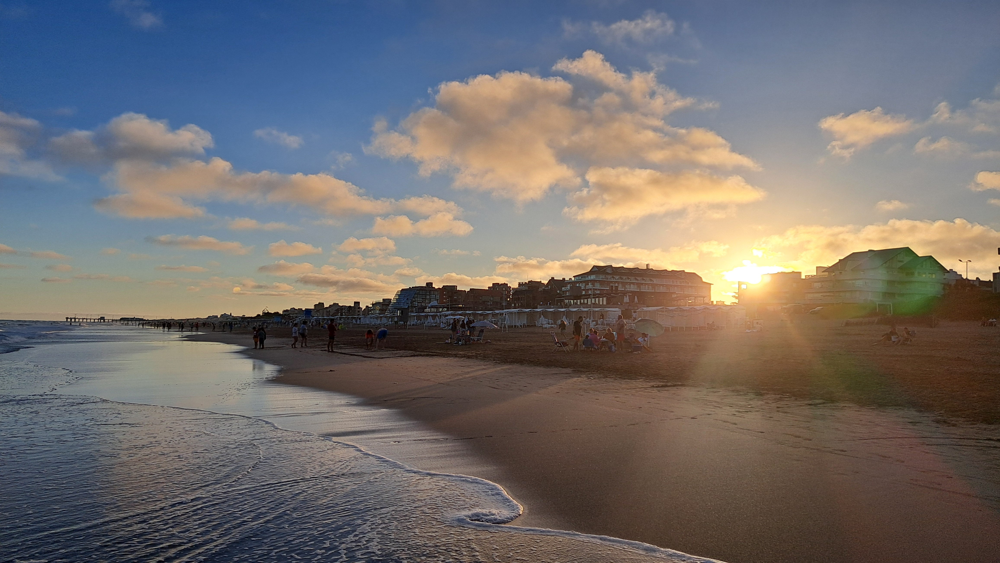
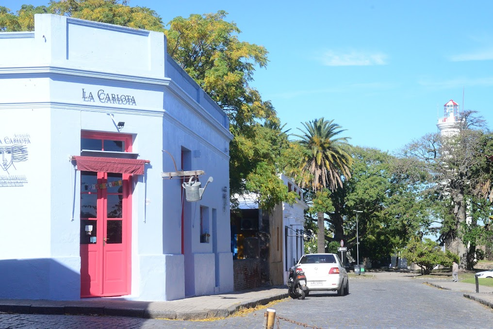
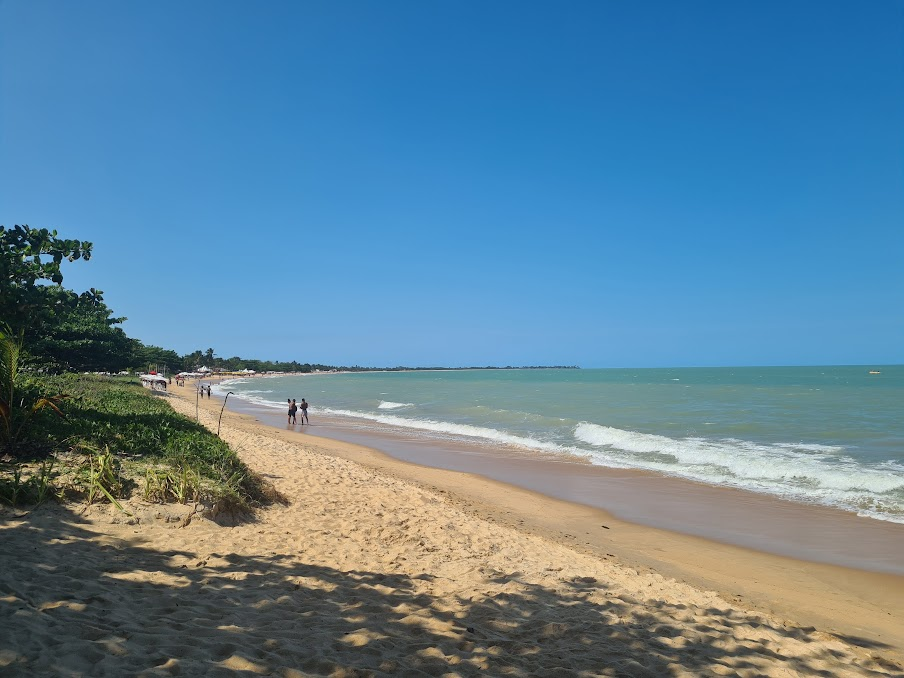
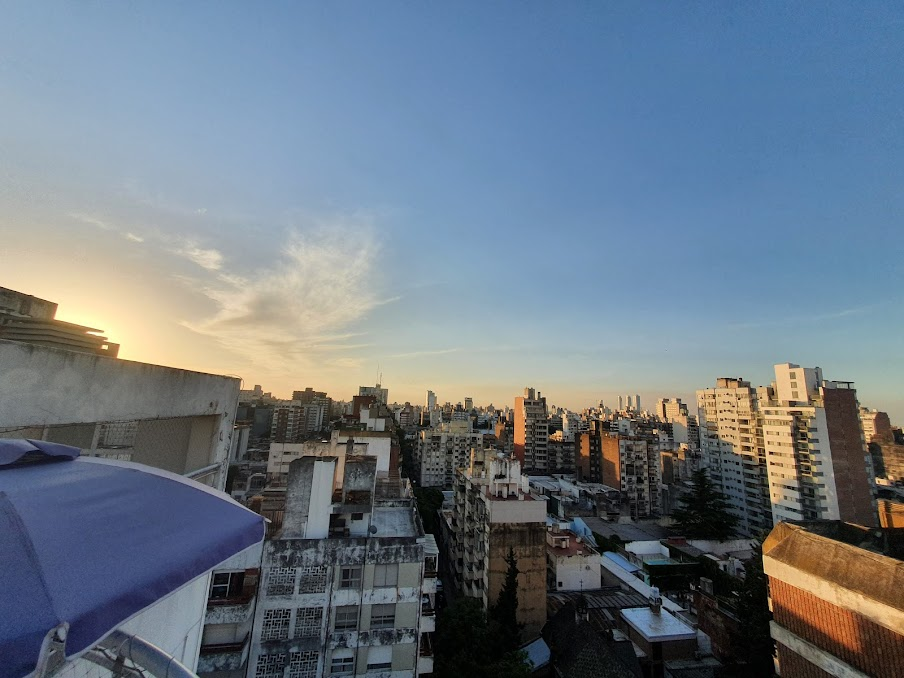

Mis Viajes Mar de las Pampas 2025 🗺️ Mar de las Pampas - Febrero 2025: Desconexión Total entre Bosque y Mar ¡Volví a Mar de las Pampas y, una vez más, me conquistó! Febrero es un mes ideal; ya pasó el pico de la temporada y la paz que se respira es increíble. Este viaje fue la excusa perfecta para desacelerar. Lo que más me gusta de este lugar es esa sensación de estar en un pueblo mágico, donde las calles son de arena y los pinos gigantes te hacen olvidar el cemento. El plan de cada día era simple... Publicado por Fernando Orioli - Febrero 2025
Pinamar 2024  Pinamar fue el destino elegido para un clásico viaje de verano. Es de esos lugares que siempre tienen algo para ofrecer, ya sea que busques relajo o un poco más de movimiento. Si bien Pinamar tiene esa fama de ser más glamoroso, lo que más disfrutamos fue la combinación de su playa amplia con la belleza de su bosque de pinos. El Centro: Un paseo obligatorio por la Avenida Bunge al atardecer, ver el movimiento, parar a tomar un helado. Es el corazón de la ciudad y siempre hay gente y actividades. La Playa: La costa es genial, perfecta para caminatas largas o simplemente instalarse. Nosotros optamos por un parador más tranquilo, alejados un poco del centro, donde el mar es protagonista... Publicado por Fernando Orioli
Uruguay - Colonia 2024  A veces, la mejor aventura es la que se organiza en el último minuto. Este viaje a Colonia del Sacramento fue exactamente eso: una escapada de un día, cruzando el Río de la Plata en ferry, que se sintió como un verdadero viaje en el tiempo. Llegamos temprano y lo primero que hicimos fue perdernos en el Barrio Histórico, Patrimonio de la Humanidad. No hay mejor plan que caminar sin rumbo por esas calles de piedra (¡cuidado con los adoquines!), flanqueadas por casas coloniales que parecen congeladas en el siglo XVIII. Los autos antiguos estacionados son el toque perfecto para la foto... Publicado por Fernando Orioli
Brasil - Porto Seguro 2022  ¡Volver a ver estas fotos me llena de energía! Porto Seguro no fue solo un viaje, fue el viaje. Ese hito que marca el fin del colegio y el comienzo de todo lo nuevo. Y sí, fue tan épico como todos dicen. Porto Seguro es el destino perfecto para un viaje de egresados: combina playas increíbles, fiesta, y una cultura vibrante. El Clásico: El Axé en la Playa: Lo más divertido era la tarde en la playa de Taperapuã. Música a todo volumen, profesores de baile enseñando Axé (¡intentar seguirles el ritmo era un desafío!) y ese ambiente de euforia colectiva. El megapolo de las noches, por supuesto, fue el centro de la fiesta... Publicado por Fernando Orioli
Rosario 2021  Rosario es una ciudad que me encanta, y este viaje de 2021, que hicimos en familia, fue la excusa perfecta para redescubrirla con otros ojos. Es una escapada ideal para el fin de semana, con esa mezcla perfecta de gran ciudad y tranquilidad ribereña. El plan central del viaje fue, por supuesto, el Río Paraná. La Costanera rosarina es un espectáculo. El Monumento: Visita obligada al Monumento Nacional a la Bandera. Subir a la torre es un ritual, y la vista que ofrece del río y la ciudad es imponente. Además, el parque circundante es ideal para que los chicos corran y jueguen. Un Paseo por el Río... Publicado por Fernando Orioli